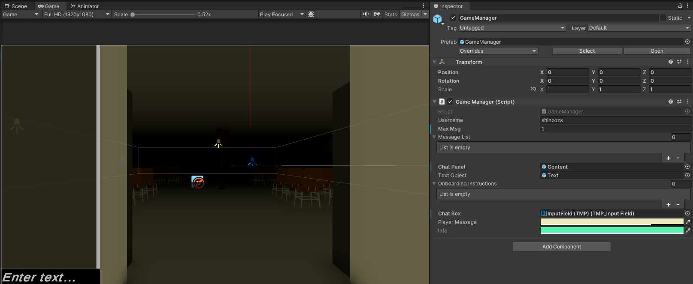

"Consumption" is a 3D survival horror game where you navigate a maze-like school, avoiding an invisible force that drains your attention. Close pop-ups to maintain movement and survive as long as possible without losing focus.
Timeline
February 2024 - March 2024
Team Size
5 members (Level Designer, Narrative Designer, Gameplay Programmer, UI/UX Developer)
Role
UI/UX Engineer, Gameplay Programmer
Processes, Reflections, & References
Onboarding System: I created a sequence of onboarding instructions that help players understand key mechanics,
such as using the Spacebar to advance the onboarding, and providing key gameplay tips like sprinting,
interacting with the environment, and avoiding spam messages.

Gameplay Mechanics: Implemented Player Movement and Interaction Mechanics.
Movement + Collision:
Move the character with WASD within the 3D world environment.
Pop-ups:
-Walking into areas push pop-ups onto your screen.
-The more pop-ups, the slower the player can move (WASD).
-Use the mouse or press the correct key to close pop-up ads
UI/UX Design: Designed the game's UI, including the main menu, sections transitions and in-game HUD.